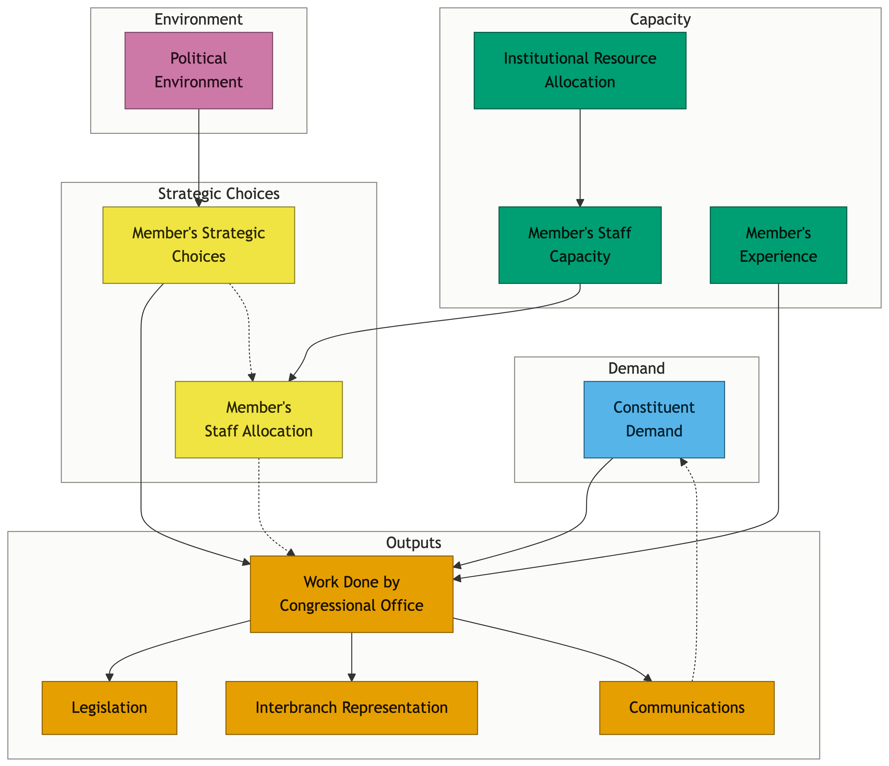

2 Theories of Interbranch Representation
ABSTRACT: Why might interbranch representation be so unequal? Political science research posits many possible explanations, some pointing in different directions. This chapter organizes prior scholarship into a three-part framework of possible drivers of interbranch representation: (1) constituent demand, (2) capacity, and (3) strategic responses to the political environment. First, we discuss the implications of a “folk theory” of model representation where only district characteristics and legislator capacity would explain inequalities. We then clarify how political science theories about reelection strategy, money in politics, partisanship, ideology, and policy interests produce additional explanations for unequal levels and distribution of interbranch representation.
This book takes up two related questions, the answers to which shape how we think about interbranch representation. First, are the activities of legislator offices that we call interbranch representation a basket that belongs together conceptually and moves together empirically? That is, is interbranch representation something to be discussed in terms of “more” or “less”? Or is it better to think of styles of interbranch representation like Fenno’s Home Style: House Members in their Districts—where the primary variation is in what kind of representation one prioritizes (Fenno 1978)? Second, what are the causes of variation in interbranch representation? If some members are doing much more than others (they are), why? Do different kinds of interbranch representation have different causes?
Existing political science theory has much to say about both questions. Several existing theories suggest that we should think of interbranch representation, in general, as “work” that some choose to do and others do not. For example, dividing legislators into “work horses” and “show horses” suggests that legislators tend to follow a type (Payne 1980). We would expect one type to prioritize interbranch representation and the other to prioritize communications.
Others suggest that priorities and how they show up in legislators’ work are more important. Fenno (1978) suggests that members of Congress shift from prioritizing constituency service to policy work as their career in Washington progresses — some prioritize constituency service, others prioritize policy work. In a world of limited resources, perhaps we should not expect everyone to do everything. And different people may opt to represent their constituents in different ways. This theory of Fenno’s also provides one answer to the second question about the causes of variation — the longer one serves and the more deeply embedded in Washington, DC, the more they prioritize Washington work over district service.
In this chapter, we expand on our three-part framework of possible explanations for variation in interbranch representation: demand, capacity, and strategy. As we describe below, some explanations touch on more than one part of this framework. For example, a representative may seek to join the House Committee on Appropriations’ Subcommittee on Agriculture, Rural Development, Food and Drug Administration, and Related Agencies because they represent farmers and feel pressure from them to get more involved in shaping grant criteria and farm subsidies (demand), or because the representative thinks it is a smart way to shape farm policy or get reelected (strategic behavior). Joining a committee may also give legislators better access to the committee staff who conduct oversight of appropriations, and being on the committee may make some agencies take legislators’ requests more seriously (two forms of increased capacity to shape the workings of government). Indeed, some agencies, including the Food and Drug Administration, meticulously document which committees every legislator who contacts the agency sits on, even for requests unrelated to committee work. Thus, a member of an Agriculture Subcommittee may make more requests to food and agriculture agencies because they face active constituent demand, because their institutional position on the committee increases their capacity to make requests, and because they have made strategic choices about what kinds of policy to focus on given the political environment they are facing. And committee membership is just one potential cause of variation.
This chapter maps existing theories onto our concept of interbranch representation. Some of these existing theories have implications for interbranch representation as a whole, though most focus on only one of its component parts, and very few talk about engaging with the executive branch as a form of representation. However, political scientists often try to characterize legislators as providing more or less representation or, alternatively, different styles of representation. Depending on how we think about interbranch representation, we may expect the drivers of variation to be fairly consistent or vary depending on whether we are looking at activities representing individuals, work on behalf of nonprofits and businesses, or policy work.
2.1 Forging a new concept of representation from disparate scholarship
To date, constituency service, oversight, and representation have been addressed by separate literatures. Constituency service has mostly been explored as reelection-oriented behavior. Oversight scholarship is dominated by principal-agent models of control. Representation has mostly been studied with respect to demographics, votes on bills, and, at times, speeches. The concept of interbranch representation that we advance in this project unifies constituency service, oversight, and other behaviors within a broader conceptual and empirical framework. We conceptualize all interactions with the bureaucracy as a decision to allocate effort (staff and time) to different priorities representing different constituencies, constrained by capacity. This framework offers a way to study this form of representation systematically as a function of one’s constituencies, capacity, and priorities.
Unlike other, more visible forms of congressional representation that have been the subject of substantial scholarly inquiry (roll-call votes, legislative speech, and bill sponsorship), interbranch representation is largely invisible and more difficult to study. Congress has refused to disclose data on this aspect of its work. In recent years, however, scholars have begun to obtain snapshots of this work from federal agencies that are (unlike Congress) subject to the Freedom of Information Act (FOIA) disclosure requirements. Acquiring these data is difficult, but doing so has yielded important findings on distributive politics (Mills and Kalaf-Hughes 2015), descriptive representation (Lowande et al. 2019), agency policymaking Ritchie (2023), legislative effectiveness (Kalaf-Hughes 2023), and money in politics (Powell et al. 2023). However, the lack of systematic data across all agencies has necessarily limited the range of questions that could be explored with these data.
Interbranch Dynamics and Congressional Oversight
In recent decades, scholarship on the interaction between the legislative and executive branches has revolved around the concepts of strategic delegation of policymaking authority and appropriation of funds on the front end (Arnold 1979; Epstein and O’Halloran 1999; Kiewiet and McCubbins 1991) and oversight on the back end (McCubbins and Schwartz 1984). As a concept, delegation focuses attention on principal-agent dynamics. Oversight scholarship also focuses on principal-agent relationships, with some recent work on descriptive representation (Minta 2011). Congressional oversight hearings can serve strategic political functions for Members of Congress by giving them the opportunity to grandstand (Park 2021), and research suggests that such grandstanding pays electoral dividends for legislators (Park 2023).
Interbranch representation is not about acts of delegation and appropriation, but there are parallels and overlaps. Delegation and appropriation occur through voting, and scholars have shown significant inequalities in who is represented in legislative voting (Bartels 2008; Carnes 2016; Gilens 2012). Studies of delegation of policymaking authority focus on asymmetric incentives and information across institutions (Epstein and O’Halloran 1999; Fiorina 1982; McCubbins and Schwartz 1984). Interbranch representation is often aimed at improving legislator information and attempting to shape policy post-delegation in ways that were not possible within the legislative process (Ritchie 2018, 2023). Other classic studies of the relationship between members of Congress and federal agencies focus on appropriations (Arnold 1979; Kiewiet and McCubbins 1991), including presidential pork (Berry et al. 2010) and earmarking. Whereas earmarks are (in theory) a feature of annual appropriations legislation, a parallel dynamic of members of Congress making requests for their districts occurs on a daily basis through interbranch representation. Indeed, when legislative earmarks were banned, legislators likely turned to interbranch representation activities, such as “lettermarking” (Mills and Kalaf-Hughes 2015).
Representation
Representation is most often studied as the congruence between legislators’ roll-call votes and constituents’ policy preferences (e.g., Miller and Stokes 1963; Clinton 2006; Ansolabehere and Jones 2010), with congruence constituting normatively “good” representation and suggesting that legislators are responsive to their constituents’ preferences. Studies of other forms of representation also assess congruence between constituents and legislators. Work on descriptive representation has assessed responsiveness on the basis of key identities (e.g., Bowen and Clark 2014; Canon 1999), including responsiveness through interbranch representation (Lowande et al. 2019). Scholarship on representation and inequality has found that legislators are more responsive to donors (Gilens 2012) and less responsive to less influential constituency groups (Miler 2010) and the poor (Miler 2018). For these commonly studied forms of representation, public voting records make it possible for scholars to measure congruence or responsiveness.
Over the last few decades, scholars have begun to evaluate other forms of representation, ranging from legislators’ speech (Grimmer 2013; Grimmer et al. 2014) to evaluating legislative effectiveness as a measure of the “quality of representation” (Volden and Wiseman 2014; Casas et al. 2019). Constituency service, on the other hand, has been studied primarily as a means for legislators to win reelection (Fiorina 1977). In this view, legislators’ responsiveness to constituent requests is not a form of representation but an electoral activity that also serves legislators. Only recently has quantitative scholarship begun to view constituency service as a form of representation (Snyder 2024; Blackwood 2026; Blackwood et al. 2026). A large number of field experiments have uncovered distortions in legislators’ responsiveness to constituents for the sharing of policy opinions (Butler and Dynes 2016; Henderson et al. 2023), requests for meetings with legislators (Kalla and Broockman 2016), and requests for constituency service (Butler and Broockman 2011; Dropp and Peskowitz 2012; Lajevardi 2020; Garcia and Sadhwani 2023). Most of these studies, however, have been conducted on state legislators, and their results may not be generalizable to members of Congress. Moreover, writing back to a constituent may not be the same as taking more substantive actions, such as intervening with a federal agency, on their behalf.
We build on and complement this literature on representation and responsiveness by documenting and explaining inequalities in interbranch representation, broadly construed, across all members of Congress, across all federal agencies, and across all forms of interbranch representation. Next, we break down our concept of interbranch representation into its two key features – its interbranch function and its role in representation – and explain how each of these features influences our theory about inequalities in interbranch representation.
2.2 Interbranch Activities
Activities involving interactions between branches of government are a necessary part of the American constitutional system of checks and balances. The shared lawmaking, war, appointment, and treaty powers of Congress and the president are the hallmarks of a system that Richard Neustadt (1991) described as “separated institutions sharing powers.” Scholarship on the relationship between Congress and the president and Congress and the bureaucracy has long explored the tensions that arise from such a system. These tensions are most apparent in activities such as congressional oversight of the bureaucracy, congressional delegation of policymaking authority, appropriations, and, to a lesser extent, constituency service. The wealth of existing research on these interbranch activities has largely considered each of them separately; our concept of interbranch representation, on the other hand, examines these activities together, as they occur at least in part through Congress’s contacts with the bureaucracy.
Although Congress has delegated significant power to the executive branch over the past century, there remain a number of methods through which Congress can exert influence over bureaucratic policy outcomes. MacDonald (2013) shows that limitation riders in appropriations legislation have allowed Congress to influence rules in the bureaucracy even as the power of the administrative state has expanded. Mills and Kalaf-Hughes (2015) shows how legislators attempted to circumvent the earmark ban through lettermarking–writing directly to federal agencies. Ritchie (2023) demonstrates how members of Congress can circumvent obstacles in the legislative process by writing directly to federal agencies and pressuring them to change policy through the rulemaking process–a process Ritchie terms “backdoor lawmaking.” Such efforts could also be read as attempts by legislators to circumvent the principal-agent problem and influence rulemaking more directly.
Although most previous research has cast constituency service primarily as an activity that helps members of Congress electorally (e.g., Cain et al. 1987; Fiorina 1977), it also requires congressional offices to interact with the federal bureaucracy. Members of Congress – or, more precisely, their staff – contact federal agencies on behalf of their constituents to help resolve individual bureaucratic issues that constituents have brought to their attention. Through this process of hearing from constituents, congressional offices may become aware of broader problems plaguing the bureaucracy, allowing constituency service to function as a form of oversight.
While interbranch representation encompasses many forms of oversight, it is broader than activities traditionally considered oversight (e.g., hearings, investigations, or sanctions). A small share of congressional interactions with bureaucrats concerns issues that rise to the level of hearings and investigations. The vast majority are interventions in the agency’s day-to-day operations (see, e.g., Lowande 2018; Lowande and Potter 2019). Agencies are constantly engaged in maintaining their political coalitions and reputations (Carpenter 2001, 2014), by, for example, tagging all incoming requests from members of Congress as “VIP” and implementing protocols for rapid responses. An interbranch representation perspective broadens the concept of oversight to encompass not only occasional hearings and oversight reports prompted by crises and scandals but also daily requests for information and comments on implementation.
Beyond broadening the concept of oversight, the nature of our data means that we are examining several different kinds of interbranch activities, including constituency service and policy work related to oversight or appropriations, simultaneously. Most other studies of interbranch activities1 have examined only one type of interbranch activity at a time. Placing multiple interbranch activities under one umbrella for analysis has implications for our theory and for our characterization of the interbranch component of interbranch representation. Because our concept of interbranch representation encompasses both oversight and constituency service, it cannot be characterized solely as either adversarial or cooperative behavior. As such, it is difficult to make normative claims about the volume of interbranch representation and what that volume says about relations between the legislative and executive branches. However, as we describe at greater length in the following section, interbranch representation is one way in which Congress functions to fulfill its constitutional responsibilities.
2.3 Representation and Interbranch Activities
Beyond helping Congress achieve its goals of conducting oversight of the executive branch, interbranch activities can also function as a form of representation. Hanna Pitkin’s (1967, 209) canonical definition of “representation” as legislators’ “acting in the interest of the represented, in a manner responsive to them” can help to illuminate the specific representational dimension of interbranch representation. Building on Pitkin (1967), Eulau and Karps (1977) define representation as being comprised of four components: policy responsiveness, service responsiveness, allocation responsiveness (appropriations, administrative interventions, and pork-barrel), and symbolic responsiveness. While most of the literature focuses on policy responsiveness, our interest in this project is a combination of service responsiveness, allocation responsiveness (administrative interventions), and policy responsiveness.
Constituency service is a direct form of responsiveness, as congressional offices contact the federal bureaucracy in response to their constituents’ requests for help. Johannes (1984) describes casework as the “function of Congress as intermediary between the government and the governed–between citizens and the bureaucracy,” (Johannes 1984, pg. 3). In addition to this literal responsiveness, constituency service can also function as a vehicle for descriptive representation (Lowande et al. 2019) and a way for constituents to feel heard by their government (Snyder 2024). And although, as legislators caution their constituents, they may not be able to achieve a favorable resolution to their constituents’ problems, the act of attempting to resolve these issues is clearly a way in which congressional offices act in their constituents’ interests.
Constituency service is one of the oldest forms of representation, dating back to the earliest congresses when constituents sought assistance with Revolutionary War pensions (Eckman 2025). It has been discussed as an important form of representation in canonical studies of Congress (Fenno 1978)–and members of Congress themselves at least used to agree. A 1977 survey of House Members found that 58% said that casework was “Very Important”, an additional 26% said “Somewhat Important,” and just 14% said “Slightly or Not Very Important” (Johannes 1984, pg. 10).
Yet constituency service remains one of the least understood congressional activities. Cain et al. (1987) began their seminal book The Personal Vote: Constituency Service and Electoral Independence by lamenting the lack of attention to constituency service in the empirical literature. That began to change in the 1980s with both Cain et al. (1987)’s survey of legislators, legislative staff, and constituents, and Johannes (1984)’s surveys of legislators, legislative staff, and federal agency staff. Their survey data, which is now more than 40 years old, produced much of what we know today about constituency service.
Following from these definitions and understandings of representation and responsiveness, scholars have typically understood normatively “good” representation to consist of an alignment between legislators’ actions and constituents’ interests. The early but comprehensive study of “policy congruence” between legislators and constituents by Miller and Stokes (1963) has spawned a robust literature on policy representation. Despite the difficulties inherent in measuring constituents’ preferences at the congressional district level, Clinton (2006) examines dyadic policy representation and finds little evidence that legislators are consistently responsive to constituents’ preferences in their roll-call votes. At the level of collective representation, Ansolabehere and Kuriwaki (2025) show that Congress often fails to pass legislation that a majority of the public supports. A number of other studies (e.g., Bartels 2008; Miler 2010, 2018) have found that legislators represent the policy interests of the wealthy and powerful over those of ordinary constituents, raising concerns about distortions in substantive representation.
While scholars and observers generally agree on the definition of normatively good substantive representation, it is less obvious what normatively good constituency service work would look like for members of Congress. In writing a report for the Congressional Research Service in 1968, Walter Kravitz wrote, “Casework has generated considerable controversy among Members of Congress for many years. That controversy involves not only the merits of the practice but also the facts about its nature and extent. Reliable and comprehensive factual information is in short supply,” (Kravitz, Walter 1972). Recently, field experiments and audit studies (e.g. Butler and Broockman 2011; Mendez and Grose 2018; Lajevardi 2020; Garcia and Sadhwani 2023) have identified patterns of discriminatory responsiveness to constituent communications, primarily among state legislators. However, it remains the case that legislators perform (and claim credit for) vastly different amounts of constituent casework, which suggests that responsiveness to existing levels of constituent demand is a primary criterion by which constituency service work should be judged.
Constituency service’s function as a form of oversight, discussed above, raises questions about the normative dimensions of interbranch representation. If legislators are contacting the bureaucracy primarily to address problems that their constituents are experiencing, then more interbranch representation may not necessarily be desirable. However, there are two reasons why a greater volume of interbranch representation may not be normatively concerning. First, given the role that we expect legislator capacity to play in explaining inequalities in interbranch representation, more contacts with the bureaucracy may be more indicative of this capacity than of any problems with the bureaucracy per se. Second, and relatedly, legislators may be engaging in these contacts for strategic purposes, which would also minimize the role of bureaucratic issues in driving these inequalities in interbranch representation. Below, we describe our theoretical framework of demand, capacity, and strategic choices and further discuss how each of these factors may illuminate additional normative concerns.
2.4 A Unified Framework: Demand, Capacity, and Strategic Choices
We introduce a framework of Demand, Capacity, and Strategic Choices to explain the interbranch representation a member’s office produces. While our focus here is on interbranch representation, this framework can help us understand work done by congressional offices more broadly. Our framework simultaneously extends and unifies existing theoretical ideas from disparate strands of scholarship on Congress and the bureaucracy, and also introduces new hypotheses not previously suggested.
Before we proceed further, we briefly explain how we define each element of our framework. We define Demand as the constituent-driven influences on a congressional office. We define Capacity as the ability of a legislator’s office to produce work. We define Political Environment as the partisan, electoral, and institutional conditions a member faces in a given year. We define Strategic Choices as decisions legislators make about what to prioritize and how to allocate their time and resources. Importantly, these elements and the explanations that follow from them understand legislators and their offices differently. Demand- and Capacity-related explanations focus on legislative offices as bureaucracies, while Strategic Choices focus on legislators as politicians.
Although most legislative politics scholarship focuses on the work that legislators do, recently scholars have brought renewed attention to the legislative office as a whole, and to legislative staff in particular (Crosson and Kaslovsky 2024; Crosson et al. 2020, 2021). One of the central elements of interbranch representation–constituency service–is often assumed to be a core institutional function of congressional offices, as evidenced by the fact that district office staff continue to provide constituency service even when the congressional office is vacant due to the death or resignation of the legislator. This dynamic suggests that constituency service is an activity aptly described by the “logic of appropriateness” that characterizes bureaucracies (March and Olsen 1989). In this view, legislators and their staff provide service to constituents simply because it is understood to be a key part of their representational responsibilities. Specifically, staff understand their job to be responding to all constituent requests.
Responses to constituent requests, however, can take many different forms. Savvy, experienced, or well-connected congressional staffers may be more capable of obtaining an answer from the bureaucracy or otherwise helping a constituent resolve their issue–not unlike how bureaucrats use their expertise to implement policy. Furthermore, with constituent requests sometimes blurring the line between casework and policy-related matters (Snyder 2024), congressional staff may need specialized knowledge to determine what does and does not warrant reaching out to a federal agency.
Figure 2.1 illustrates how the parts of our framework come together to explain work done by congressional offices and highlights some of the important components (sub-units) within each part of the framework. Looking at Figure 2.1 from top to bottom, we see the political environment shaping the strategic choices legislators make, as well as office capacity influencing both a member’s staff allocation choice and the work done by congressional offices. Members’ strategic choices, constituent demand, and capacity all shape the work that is done by congressional offices (output). The work done by congressional offices encompasses three different types of outputs: legislation, interbranch representation, and communications.
In the following sections, we elaborate on each of these elements of our framework.
Demand
In any democratic system, the needs and preferences of a legislator’s constituents are at least supposed to play a role in the work done by a legislator’s office. While a large literature exists examining whether and how constituents’ policy preferences impact legislators’ voting behavior (Miller and Stokes 1963; Achen and Bartels 2016), less is known about how constituent demand relates to the provision of interbranch representation. Of all work done by congressional offices, one might imagine that interbranch representation, in which a large portion of the work is helping individual constituents navigate specific problems they have encountered with some branch of the federal bureaucracy, might be most closely tied to constituent demand.
Unfortunately, most of the time we cannot observe constituent demand in the form of the number of requests for help member offices receive directly. Congressional offices typically do not release data on the number of requests for help they receive. But there is one notable exception in which this data was collected that gives us a brief glimpse into the world of constituent demand. In 1976, the House created a Commission on Administrative Review (HR 1368) to conduct “a comprehensive study of the administrative system” (Commission on Administrative Review, U.S. House of Representatives 1977, pg 1).2 To lay the groundwork for their recommendations, the commission undertook a rigorous data collection process that included (among many other things) gathering data from congressional offices about their constituency service caseload. If we assume that all member offices recorded constituent requests for help, which is certainly not a given, this number would roughly approximate actual constituent demand (requests received).3 Thankfully for the advancement of scholarly research on congressional offices, the committee was remarkably transparent and forward-thinking in not only releasing their results, but including a detailed methodological report (Commission on Administrative Review, U.S. House of Representatives 1977) and providing full replication data that future scholars could, and did, take advantage of to conduct additional analyses (Yiannakis 1981; Johannes 1984; Maass 1983).
Since we lack data on constituents’ requests for help in the contemporary period, we focus on three components likely to be correlated with constituent demand: representing a larger number of constituents, representing more demanding constituents, and representing higher need constituents. Conceptually, the number of constituents and higher need constituents are related to an underlying latent demand. The former captures how many constituents might need help, while the latter captures how many constituents possess the information, time, and energy necessary to advocate for themselves.
More Constituents
The first and most straightforward component of constituent demand is the number of constituents. We view this as a mechanical relationship. If X proportion of constituents encounter problems with the federal government, the more constituents one represents, the more constituents one will represent encountering problems with the federal government. While the number of constituents represented by United States Representatives is roughly equivalent, US Senators represent states with a wide range of state populations. The more people a legislator represents, the more problems they are likely to encounter with the federal government, and thus the greater demand for interbranch representation. While an intuitive argument, little empirical evidence exists to support it. Drawing on Commission on Administrative Review, U.S. House of Representatives (1977)‘s data collection, and augmenting it with additional data collection of his own, Johannes (1984) found a weak positive relationship between state population and senators’ constituency service caseloads in the late 1970s.
While not explicitly focused on the issue of constituency demand, there is a body of research examining the impact of state population (constituency size) on Senate representation, demonstrating the opposite relationship between population and representation (Oppenheimer 1996; Lee 1998; Lee and Oppenheimer 1999). Perhaps of greatest relevance, Oppenheimer (1996) found that constituents from more populous states have less contact with their legislators across a variety of survey measures (meeting the incumbent personally, attending a meeting where the incumbent spoke, speaking with a staff member, receiving mail from the incumbent, and contacting the incumbent). Of particular interest for our purposes here, he found substantial variation in constituents seeking help with a problem by state size. Constituents from more populous states were much less likely to report seeking help with a problem or information from their Senators (Oppenheimer 1996).
How do we reconcile our intuition about greater population leading to greater constituent demand with the existing literature demonstrating constituents from less populous states receiving better representation? We think those studies are capturing representational outcomes, which are functions of the legislator’s office capacity and member choices about what to prioritize. Thus we argue that representing more constituents will be associated with higher levels of interbranch representation.
Hypothesis 2.1 (More Constituents) Legislators who represent more constituents will be associated with higher levels of interbranch representation.
Before moving on to our next component of demand, we will note two complications that limit the conclusions we can draw about constituent population: 1) constituent population only meaningfully varies in the Senate, and 2) the amount of money senators receive to run their offices is a function of state population. Thus state population in the Senate is a somewhat bundled treatment that includes both increased population and an increased office budget.4
More Demanding Constituents
Conceptually, we might imagine that constituent demand could vary for reasons other than population. As former Congressman and political scientist David E. Price noted when describing his experience representing North Carolina’s fourth district, “…constituents vary considerably in their ability and inclination to use it” (Price 2022). A constituent encountering a problem with the federal bureaucracy needs to know that they can reach out to their congressional representatives for assistance with such problems, know how to do so, and then have the time and energy to follow through and reach out to them. None of the linkages in that chain should be taken for granted. A large body of work demonstrates how ill-informed most Americans are about basic political facts, and how knowledge is unevenly distributed across the American public (Delli Carpini and Keeter 1996; Lupia 2016).
Much less is known about how well informed the American public is regarding casework and constituency service support that they can receive from members of Congress. While systematic empirical evidence regarding knowledge of casework support is surprisingly lacking, our personal conversations with friends, family, and well-informed professional political scientists suggest that many people would not think about contacting their elected representatives when encountering problems with the bureaucracy. We can, however, turn again to the evidence from the Commission on Administrative Review, U.S. House of Representatives (1977)’s data collection. Using these data, and augmented with additional data collection of his own, Johannes (1984) found a positive relationship between the number of government employees in a district (perhaps those most likely to know how to navigate the federal government) and constituency service caseload in the House, but no relationship in the Senate. Meanwhile, district education had an inconsistent and surprising negative relationship, contrary to resource-based arguments.
A small body of research has used survey data (1977-1980) asking if the respondent has reached out to their legislator for help (constituency service) and attempted to examine both the more demanding and greater need constituent hypotheses (Yiannakis 1981; Johannes 1984). Yiannakis (1981) found that at the individual level, high income, higher education, prior contact with the member, and knowing someone who has requested help were all positively associated with requests for constituency service. Johannes (1984) found inconsistent relationships between constituent demographics and requests for assistance, in contrast to the strong relationships he found between constituent demographics and expressing political or policy opinions to the member.
Existing literature has more consistent findings, however, about what factors are associated with constituents contacting their legislators in general, in the sense that the contact could be about expressing an issue position or requesting casework support, as well as general participation in politics.5 Verba, K. Schlozman, et al. (1995)’s canonical Civic Voluntarism Model suggests that citizens need both the motivation and capacity to participate, with constituents with higher socio-economic status (particularly education) being most likely to speak up.
We are building on these findings (Verba, K. Schlozman, et al. 1995) to argue that legislators who represent more constituents who are informed about how to seek help and what the government could help with will do more interbranch representation. This could include legislators who represent constituents with greater levels of education, but also legislators who represent more federal employees who are particularly well positioned to be knowledgeable about how to seek help from the federal government.
Hypothesis 2.2 (More Demanding Constituents) Legislators who represent more demanding constituents will be associated with higher levels of interbranch representation.
Greater Need Constituents
The last component of constituent demand in our framework is constituent needs. Some constituents might have a greater need for help from the federal government. While the previous section focused on constituents who, in the Verba, K. Schlozman, et al. (1995) framework, have greater capacity to contact their legislators, in this section we focus on constituents who have greater motivation to contact them because they have greater needs. Such constituents are those who might be struggling with major problems–lower income, food insecurity, housing insecurity, immigration status issues, and other issues with a strong presence in their daily lives. On the one hand, these constituents have the greatest needs, and in the Civic Voluntarism framework, they also have greater motivation to speak up. But on the other hand, these very traits are also correlated with potentially limiting their capacity and resources to speak up. These constituents with the greatest need might be the least likely to know where to appeal for help, and might be the least able to devote time and resources to seeking help (Verba, K. Schlozman, et al. 1995). For that reason, we could expect either a positive or negative relationship between representing more high-need constituents and interbranch representation.
There is little direct evidence examining exactly this question on constituent demand. Jones et al. (1977) found support for a “parabolic” model of constituent need in a local government context, in which individuals in the middle of the income distribution, who have both enough need and enough knowledge, were more likely to contact public officials for help. Other studies, however, have largely failed to replicate these results. Johannes (1984) examined the relationship between the median income in a district and constituency caseload requests for help, and found a weak and inconsistent positive relationship. Using survey data from this same period, Johannes (1984) found no relationship between the respondent’s self-reported economic hardship or income and contacting one’s member of Congress for casework assistance. Drawing on similar survey data, Yiannakis (1981) found a positive relationship between the respondent’s income and likelihood of contacting one’s congressman for casework assistance, suggesting that not having the knowledge/resources to reach out may outweigh the need itself.
Hypothesis 2.3 (Greater Need Constituents) Legislators who represent constituents with greater needs do more interbranch representation for individuals, nonprofits, and local governments.
Hypothesis 2.4 (Disempowered Constituents) Legislators who represent lower socio-economic status constituents do less interbranch representation.
Summarizing Demand Hypotheses
Table 2.1 below summarizes our expectations for how various types of constituent-driven demand pressures impact the interbranch representation a member’s office produces.
The three components of constituent demand we have discussed here are by no means comprehensive. Further complicating this picture is that legislators appear to use capacity to generate demand through advertising and informing their constituents about ways they can help (Yiannakis 1981; Blackwood 2026) – either for strategic reasons or just because they believe normatively it is the right thing for them to do. Thus, in our flow chart above Figure 2.1, we show a potential feedback loop between members’ communications activities and constituent demand.
| Hypothesis | Description | Direction | Citations |
|---|---|---|---|
| Hypothesis 2.1 More Constituents | Legislators who represent more constituents will be associated with higher levels of interbranch representation. | ↑ | Johannes (1984), Oppenheimer (1996) (Contra) |
| Hypothesis 2.2 More Demanding Constituents | Legislators who represent more demanding constituents will be associated with higher levels of interbranch representation. | ↑ | Johannes (1984) (Pro-Casework, Contra-Survey data), Yiannakis (1981) |
| Hypothesis 2.3 Greater Need Constituents | Legislators who represent constituents with greater needs do more interbranch representation for individuals, nonprofits, and local governments. | ↑ | Johannes (1983), Johannes (1984) Verba, K. L. Schlozman, et al. (1995), |
| Hypothesis 2.4 Disempowered Constituents | Legislators who represent lower socio-economic status constituents do less interbranch representation on behalf of individuals. | ↓ | Yiannakis (1981), Verba, K. L. Schlozman, et al. (1995); Verba and Nie (1972) |
Why Constituent Demand is Insufficient to Explain Interbranch Representation
While acknowledging the central role of constituent demand in the production of interbranch representation, we caution against overstating its role. An extreme interpretation of the importance of constituent demand is one of the myths we hope to dispel in writing this book: that interbranch representation is simply a function of constituent demand. We call this view the “folk theory of constituency service.” In this folk theory world, legislators are simply responding to all constituents in an even and apolitical manner; there are no constraints imposed by the office’s capacity limits, and members are making no choices about whom to help or what to prioritize. Rather, they receive a request for help, and they reach out to a federal agency to help the constituent.
While we do not directly observe the requests for help legislators receive from constituents and thus cannot directly compare the requests for help to interbranch representation provided, a brief examination of interbranch representation provided by US senators who represent vastly different numbers of constituents renders this purely demand-driven explanation unlikely. It is hard to imagine, for example, that the mere 1.8 million West Virginians asked for more help from Senator Robert Byrd than the 29 million Texans did from Senator Ted Cruz, which would be necessary to believe a folk theory explanation of why Senator Byrd provided so much more interbranch representation to his constituents than did Senator Cruz (United States Census Bureau 2026). While constituent demand appears insufficient to explain inequality in interbranch representation, we believe it still plays an important role in the production of interbranch representation.
Existing research, however, suggests that such a view of legislative behavior as non-strategic (and in the strong form unconstrained) may be inadequate. As discussed above, political scientists have long understood legislators’ behavior, including their provision of constituency service, to be strategic, particularly when it comes to helping legislators achieve reelection (e.g., Mayhew 1974; Cain et al. 1987; Fiorina 1977; Fenno 1973). Other research dating from the 1970s and 1980s has largely supported this claim (Serra and Cover 1992; Serra and Moon 1994), and more recent work suggests that legislators behave as though constituency service has electoral benefits (Dropp and Peskowitz 2012), just as senators tailor their communications based on their electoral concerns (Grimmer 2013). Furthermore, field experiments demonstrate uneven responses that different constituents receive from state legislative offices in the United States on the basis of constituent race (Butler and Broockman 2011), from Members of Parliament in the United Kingdom on the basis of constituent ethnicity and occupation (Habel and Birch 2019), and from local politicians in South Africa on the basis of race (McClendon 2016). We therefore expect that legislators’ interbranch representation activities will vary according to their motivations. For example, electoral security may matter, with less electorally secure legislators engaging in more contact with the bureaucracy.
Two additional features of the “folk theory” are also unrealistic. First, the model representatives envisioned by this “folk theory” would be assumed to have similar levels of institutional capacity with which to serve their constituents and engage in interbranch representation. In practice, however, members of Congress differ when it comes to the resources and staff at their disposal to support this work. Similarly, in this “folk theory” world, the model representatives would also represent constituents with similar demands to their representatives. Yet in the real world, we might expect constituent demands to vary across districts. Thus, we think it is necessary to look beyond Constituent Demand and incorporate Capacity and Strategic Choices shaped by Political Environment as additional parts of our interbranch representation framework.
Capacity
We turn next to the component of our theory. We argue that how much interbranch representation legislators engage in is likely to be positively associated with the capacity of the legislator’s office. Offices with greater capacity have the potential to provide more interbranch representation, and vice versa. We are building on four existing streams of capacity literature: 1) formal theory voter screening models that predict that as a legislator’s capacity increases, they will increase their level of constituency service (Ashworth and Bueno de Mesquita 2006), 2) empirical research that suggests low congressional capacity serves as a major constraint on Congress’s work (LaPira et al. 2020; Reynolds 2020; Bolton and Thrower 2016), 3) empirical research that shows legislator capacity impacts backchannel (backdoor) policymaking–when legislators contact executive agencies attempting to influence policy (Ritchie 2018, 2023) and 4) our prior research that shows that increases in congressional capacity can offset shifts in legislator priorities between policymaking and constituency service (Judge-Lord et al. 2026).
There are, however, several different components of capacity to consider.
Capacity: Legislator Experience
Like anyone starting a new job, legislators face start-up costs such as how to organize their office, develop efficient routines, and make connections. Empirical research on both policy work with executive agencies (Ritchie 2018, 2023; Judge-Lord et al. 2026) and constituency service work with executive agencies (Judge-Lord et al. 2026) has shown that capacity gained from legislator experience is correlated with higher levels of interbranch representation. Thus,
Hypothesis 2.5 (Capacity: Legislator Experience) Legislators with more experience will be associated with higher amounts of interbranch representation.
We can think of legislator experience as coming from both experience within the chapter (seniority) and from experience in politics itself. An alternative conceptual approach to direct congressional experience within the chapter is thinking about political amateurism–politicians new to politics itself. For example, a freshman member of Congress might be new to Capitol Hill, but could have served previously on a city council and in his or her state legislature, during which they could have gained experience with analogous forms of interbranch representation. Congressional research has examined the impact of political amateurism in both congressional campaigns and in the work of Congress itself (Canon 1990; Porter and Treul 2025, 2026; Porter et al. 2025), but has yet to explore the impact of political amateurism on interbranch representation specifically.
Capacity: Institutional Position
Legislators’ institutional positions also shape the capacity of their offices. In this project, we are primarily focused on committee positions – committee chairs, ranking members, and subcommittee chairs–as the most relevant forms of institutional positions. Committee chairs direct committee staff in addition to their own personal staff. While committee staff are at least theoretically limited to working on committee business, one might imagine a legislator could reallocate his personal office staff differently, and that staffers working for the same legislators (committee and personal office) could force closer connections and help provide knowledge and expertise to one another. Empirical research shows that this additional staff capacity increases both policy work (Ritchie 2018, 2023; Judge-Lord et al. 2026) and constituency service (Judge-Lord et al. 2026). An alternative interpretation of any potential relationship between institutional position and interbranch representation is also possible–that committee chairs are more powerful, and they anticipate the bureaucracy will respond better to them.
Hypothesis 2.6 (Capacity: Institutional Position) Legislators who hold committee leadership positions will be associated with higher amounts of interbranch representation.
Capacity: Reporting Committee Assignment
Congressional committee assignments provide members with information and the opportunity to gain substantive expertise about a policy area, including the agencies that a committee oversees. While we often focus on the role that the House Oversight Committee plays in overseeing the executive branch, other committees also play a role in oversight. These substantive committees are also charged with overseeing agencies within their policy area. In congressional lingo, these relationships are called the “Reporting Committees” for a federal agency (see Lewis and Selin 2012). In addition to gaining substantive expertise in the policy area and expertise about the agency itself, members sitting on these committees have access to committee staff for substantive policy information about issues and agencies in the committee’s wheelhouse. We consider sitting on a committee to which the agency reports (a form of oversight) as expanding that member’s capacity with regard to that agency.
Hypothesis 2.7 (Capacity: Reporting Committee Assignment) Legislators who sit on the reporting committee for the agency will be associated with higher amounts of interbranch representation with that agency.
A nuance that will complicate our interpretation of this relationship is that a committee seat on a reporting committee may capture other things beyond capacity that comes from sitting on the committee. Members may have prior expertise in a policy area, which could partially contribute to getting that committee assignment in the first place. This complication could be considered capacity coming from prior life experience (not committee reporting relationships themselves), so it would still fall under the capacity portion of our framework.
Alternatively, a seat on a reporting committee could be considered a form of strategic behavior. It could be a strategic choice to seek out that committee assignment in the first place, because legislators seek to join committees that oversee parts of the government they care about. But we could also think of it as a strategic choice to invest in oversight work with the agency. Interbranch representation includes many forms of agency oversight. Only a small proportion of congressional-agency interactions rise to the levels of hearings and investigations. Instead, as Lowande (2018) and Lowande and Potter (2019) demonstrate, most legislative interventions happen in direct communication between legislators and agencies. Legislators who sit on congressional committees that have a reporting relationship with that agency are likely to engage in higher levels of interbranch representation with that agency. While notions of policy-focused interbranch representation might immediately spring to mind, constituency service can also be a congressional oversight strategy (Johannes 1979).
Capacity: Staff
Unlike legislative work, where a legislator might choose to be more hands-on, the vast majority (if not all) of interbranch work in the contemporary period is carried out by congressional staff. While legislators played a much greater role in interbranch representation in earlier eras of congressional history (Olson 1966), today staff do most of the work. Research shows that other aspects of congressional work—legislative committee productivity and individual legislator effectiveness–are impacted by staff experience and staff budget allocation (Cottle 2022; Ommundsen 2025; Montgomery and Nyhan 2017; Crosson et al. 2020; Reynolds 2020).
We argue that a larger staff and more experienced staff have the capacity to provide more interbranch representation. In this book, we examine three aspects of congressional staffing that impact interbranch representation: staff experience, staff quantity, and staff budget.
Hypothesis 2.8 (Capacity: Staff) Legislators with more staff capacity (staff quantity, staff experience, and/or budget) will be associated with higher amounts of interbranch representation.
Summarizing Capacity Hypotheses
Table 2.2 below summarizes our expectations for how various types of legislative office capacity impact the interbranch representation a member’s office produces.
| Hypothesis | Description | Direction | Citations |
|---|---|---|---|
| Hypothesis 2.5: Legislator Experience | Legislators with more experience will be associated with higher amounts of interbranch representation. | ↑ | Judge-Lord et al. (2026), Ritchie (2018), Lowande (2018), Ritchie (2023), Porter and Treul (2026) |
| Hypothesis 2.6: Institutional Position | Institutional positions (chair, ranking member, and party leadership) come with both power and resources that expand capacity to provide interbranch representation. | ↑ | Judge-Lord et al. (2026), Lowande (2018), Lowande and Potter (2019), Lauterbach and Ritchie (2025), Ritchie (2023) |
| Hypothesis 2.7: Reporting Committee Assignment | Legislators who sit on the reporting committee for the agency will be associated with higher amounts of interbranch representation with that agency. | ↑ | Johannes (1979), Minta (2011) |
| Hypothesis 2.8: Staff | Greater quantity of staff, quality of staff, and budget devoted to staff expand capacity. | ↑ | Olson (1966), Fiorina (1977), Judge-Lord et al. (2026), Cottle (2022), Ommundsen2025, Cottle (2022); Ommundsen (2025);, Cottle (2022); Ommundsen (2025), Montgomery and Nyhan (2017), Crosson et al. (2020), Reynolds (2020) |
These legislative capacity factors have the potential to impact not just interbranch representation, but other areas of legislators’ work. One question we will return to in the concluding chapter is whether the patterns of interbranch representation we observe correlate with other forms of legislative representation. For example, do high interbranch representation performs also more legislatively effective, and good fundraisers? A large body of formal theory literature examines elections as selection mechanisms for high- or low-quality politicians (Dewan and Shepsle 2011), and under some assumptions might imply correlated performance across work areas.
Strategic Choices
How much energy and staff time do legislators want to devote to interbranch representation as opposed to other tasks like legislating and communications? It may depend on what they are trying to accomplish and what political environment they find themselves in. Beginning with Fenno (1973) and Mayhew (1974), a substantial body of legislative politics literature has explored the strategic motivations of members of Congress. We begin with a general hypothesis that legislators may have different goals, and depending on the political environment, may make different strategic choices about how much and what type of interbranch representation to prioritize. These varying strategic motivations could shape members’ desire to engage in both the constituency service and policy components of interbranch representation.
An important prior factor shaping the strategic choices members make is the political environment they find themselves in during that Congress. We focus on four aspects of the political environment: whether the member is electorally vulnerable, whether they are in the chamber majority, whether they are a member of the President’s party, and whether they sit on a congressional committee that has a reporting relationship with a particular agency.
Strategic Choice: Prioritizing Reelection (Political Environment: Electoral Vulnerability)
While it is difficult to directly measure a legislator’s motivation, we can identify situations in which legislators are likely to prioritize certain goals or motivations. Perhaps the most widely recognized strategic motivation of legislators is reelection (e.g., Mayhew 1974; Cain et al. 1987; Fiorina 1977; Fenno 1973). As David Mayhew famously wrote in , “[Reelection] has to be the goal of everyone, the goal that must be achieved over and over if other ends are to be entertained” (Mayhew 1974).
Yet, in the modern Congress, very few members of Congress are electorally vulnerable in either general or primary elections. Legislators who do find themselves in an electorally vulnerable political environment are likely to prioritize reelection. Legislators motivated by electoral concerns might devote additional attention and resources to helping their constituents, so that those constituents will vote to reelect the legislator (Dodd 1977; Fiorina 1977; Cain et al. 1987; Serra and Cover 1992; Serra and Moon 1994; Dropp and Peskowitz 2012).
Members of Congress purport to believe that constituency service work will help their reelection efforts, with 44% of members saying they believed reelection was the primary reason most members perform constituency service (Johannes 1984, pg. 13). This intuition has some empirical grounding. In their exploration of why Americans like their individual member of Congress more than Congress the institution (what has become known as Fenno’s paradox), Parker and Davidson (1979) found that Americans evaluate Congress the institution based on its legislative performance, the style and pace of the legislative process, and legislative-executive relations, while they judge individual members of Congress on the basis of two factors: constituency service and the legislator’s personal characteristics.
Hypothesis 2.9 (Strategic Choice: Prioritizing Reelection when Electorally Vulnerable) Legislators worried about reelection (from more vulnerable districts) will be associated with higher amounts of interbranch representation.
While a substantial body of research ties reelection interests to constituency service, counterarguments are also prevalent in the literature. Johannes and McAdams (1981) found no relationship between constituency service and election results.6 This expectation that more electorally vulnerable members would engage in more constituency service is also contrary to Ritchie’s findings in Backdoor Lawmaking, which showed no consistent relationship between electoral vulnerability and policy work with federal agencies (Ritchie 2023).
Another potential reason for caution regarding the relationship between electoral vulnerability and interbranch representation is the invisibility of interbranch representation. Although reelection motives have long been posited as a motivation to engage in constituency service, a skeptic might question whether allocating time and resources to a largely invisible activity rather than something more visible like communications or legislation is the best strategy. While acts of constituency service might be visible to an individual who has been helped, as well as their friends and family, one would have to assume fairly large social network amplification effects for it to reach enough voters to make an electoral difference at a time when the size of the average House district is over 760,000 people (Eckman 2026).
Strategic Choice: Prioritizing Interbranch Representation when in Chamber Minority
Legislators in the minority party often have a difficult time passing legislation, because most in their chamber have differing policy preferences. In her research on backdoor policymaking with federal agencies, Ritchie argues that legislators are most likely to turn to backchannel lawmaking by appealing directly to federal agencies when they face obstacles in the legislative process (Ritchie 2023). Majority legislators encounter a much friendlier legislative environment and are thus less likely than minority legislators to turn to backchannel policy appeals to bureaucratic agencies. We argue that this same theory generalizes to prioritizing all forms of interbranch representation when the opportunities to legislate are more challenging.
Hypothesis 2.10 (Strategic: Prioritizing Interbranch in Minority) Legislators from the minority party will be associated with higher amounts of interbranch representation.
Strategic: Taking Advantage of Cooperative Executive or Oppose President’s Agency Work?
Building on Berry et al. (2010)’s finding that members of the President’s party receive more federal spending in their districts, we hypothesize that members of the President’s party may engage in higher levels of interbranch representation. Interbranch representation is at the nexus of the executive and legislative branches. The behavior we are documenting in this book is the congressional portion of that relationship; it is legislators reaching out to executive branch agencies. To actually deliver results to their constituents, the agencies need to cooperate. If legislators of the President’s party think they are more likely to receive higher levels of cooperation from executive branch agencies, they may be motivated to attempt interbranch representation at higher rates.
Hypothesis 2.11 (Strategic: Take Advantage of Cooperative Executive) Legislators from the President’s party will be associated with higher amounts of interbranch representation.
The other side of the coin, however, is that while members of the president’s party might anticipate a friendlier reception from executive branch agencies controlled by a same-party president, members of the opposition party might have greater incentives to engage in oversight of an executive branch controlled by an opposing party’s president. Similarly, we might anticipate constituents of opposition party legislators having more concerns or problems with agencies controlled by a president of a different party, who might prioritize different types of constituents or policies less hospitable to opposition party constituents. Lastly, Ritchie’s argument that legislators turn to backdoor policymaking when they confront obstacles in the legislative process applies here, too. Faced with a president unlikely to support the legislative proposals of opposition legislators, Ritchie found that legislators were more likely to turn to backchannel policymaking (Ritchie 2023). Thus, we also generate an alternative hypothesis that legislators who oppose a president’s agency work might engage in more interbranch representation.
Hypothesis 2.12 (Strategic: Oppose President’s Agency Work) Legislators not from the President’s party will be associated with higher amounts of interbranch representation.
Strategic Motivation: Supports or Opposes Agency Objectives
Just as shared partisanship with a president could lead a legislator to engage in more or less agency work, legislators who support an agency’s objectives might want to engage in more or less work with an agency. While shared partisanship between presidency and legislator may be a more familiar concept, we can also think of executive agencies as having different ideologies (Richardson et al. 2018) and consider the ideological distance between a legislator and an agency. Thus we could have a similar pair of hypotheses about how supporting or opposing an agency’s objectives could lead to more or less interbranch work with that specific agency.
Hypothesis 2.13 (Strategic: Supports Agency Objectives) Legislators who share similar preferences with an agency (are ideologically proximate to the agency) might want to engage in more work with the agency.
A competing hypothesis would be that legislators who dislike what an agency does (are ideologically distant from the agency) would be likely to do more oversight of that agency. If legislator interactions with the agencies take the form of police patrols or responding to “fire alarms” (McCubbins and Schwartz 1984), we may expect policing and attention to problems to focus on those institutions perceived to be distant. The rationale here is analogous to seeking to oversee or investigate something a legislator dislikes.
Hypothesis 2.14 (Strategic: Opposes Agency Objectives) Legislators who disagree with an agency (are ideologically distant from the agency) will be associated with higher levels of interbranch work with that agency.
Thus far, our hypotheses have focused on the total amount of interbranch representation legislative offices provide. Our remaining hypotheses explore more nuanced variation in the subtype of representation – whom they are representing when engaging in interbranch representation and whether they are engaging in constituency service work or policy work.
Strategic: Advocate for Corporate Donors
A strategic choice legislators can make is thinking about on whose behalf to advocate. While a substantial body of research has documented the disproportionate influence of the elite (Bartels 2008; Gilens 2012; Carnes 2013; Gilens and Page 2014), the mechanisms of influence are substantially less clear. A large number of studies have concluded that, at least most of the time, campaign contributions do not buy roll call votes in Congress (Ansolabehere et al. 2003). However, as Powell and Grimmer (2016) point out, the high-profile visibility of roll call votes may make them one of the least desirable mechanisms of influence. Thus, the very invisibility that hinders the public’s knowledge of interbranch representation might make it a desirable pathway for the influence of money (Powell et al. 2023). In a case study of the Federal Energy Regulatory Commission, Powell et al. (2023) found that legislators who received more corporate PAC contributions from energy companies were more likely to engage in interbranch advocacy on behalf of corporate interests.
Hypothesis 2.15 (Strategic: Advocate for Corporate Donors) Legislators who engage in more corporate fundraising will be associated with higher levels of corporate interbranch representation (constituency service and policy).
Strategic: Prioritizing Fundraising
There is widespread conventional wisdom that the more time members of Congress spend “dialing for dollars,” the less time they spend on constituency service and policy work.
Hypothesis 2.16 (Strategic: Allocate Time to Fundraising) Legislators who engage in more corporate fundraising will be associated with lower levels of constituency service and policy work not on behalf of corporations.
Strategic: Republican
Because the Republican Party is typically perceived as being friendlier to business interests (Gimpel et al. 2014), we expect that Republicans will do more interbranch representation on behalf of business interests than Democrats will.
Hypothesis 2.17 (Strategic: Republican) Republicans will advocate more for business interests in both service and policy.
Strategic Choices: Staff Allocation
The last strategic choice that we consider is how legislators allocate their staff. Legislators who choose to prioritize a certain type of activity may want to devote more staff resources to accomplish that objective. Thus we can view staff allocation choices (in the form of the amount of a legislator’s office budget that they spend on constituency service staff, for instance) as a reflection of the member’s priorities, and thus a strategic choice they are making. We argue that member offices that devote more resources to staff who do a certain type of work are likely to produce more of that type of work.
Hypothesis 2.18 (Strategic: Staff Allocation) The more staff an office allocates to a given type of work, the more of that work it produces.
| Hypothesis | Political Environment | Description | Direction | Citations |
|---|---|---|---|---|
| Hypothesis 2.9: Prioritizing Re-election when Electorally Vulnerable | Electorally vulnerable | Legislators worried about reelection (from more vulnerable districts) will be associated with higher amounts of interbranch representation. | ↑* | Mayhew (1974); Dodd (1977); Cain et al. (1987); Fiorina (1977); Fenno (1973); Serra and Cover (1992); Dropp and Peskowitz (2012); Ritchie (2023) (Mixed) |
| Hypothesis 2.10: Prioritizing Interbranch Representation when in Chamber Minority | Majority party member | Legislators from the minority party will be associated with higher amounts of interbranch representation. | ↓ | Ritchie (2023) |
| Hypothesis 2.11: Take advantage of cooperative executive | Co-partisan President | Legislators from the President’s party will be associated with higher amounts of interbranch representation. | ↑ | Berry et al. (2010) |
| Hypothesis 2.12: Oppose president’s agency work | Co-partisan President | Legislators not from the President’s party will be associated with higher amounts of interbranch representation. | ↓ | Ritchie (2023) |
| Hypothesis 2.15: Advocate for corporate donors | Members who receive more corporate PAC contributions, are more likely to engage in interbranch corporate advocacy. | ↑ Corporate Interbranch (Constituent Service and Policy) | Powell and Grimmer (2016); Powell et al. (2023) | |
| Hypothesis 2.17: Republicans Advocate for Business | Republicans advocate more for corporate interests | ↑ Corporate Interbranch (Constituent Service and Policy) | Gimpel et al. (2014) | |
| Hypothesis 2.13: Support Agency Objectives | Members who are more supportive of an agency’s objectives (are ideologically proximate to the agency), are more likely to work with that agency. | ↑ All forms of interbranch with ideologically proximate agencies | Carpenter (2001) | |
| Hypothesis 2.14:Oppose Agency Objectives | Members who are opposed to an agency’s objectives (are ideologically distant to the agency), are more likely to work with that agency. | ↑All forms of interbranch with ideologically distant agencies | McCubbins and Schwartz (1984) | |
| Hypothesis 2.18: Staff Allocation | The more staff an office allocates to a given type of work, the more of that work it produces. | ↑ That type of interbranch representation | Johannes (1984), Fiorina (1977) |
From Theoretical Framework to Research Design
In this chapter, we have constructed a theoretical framework of Demand, Capacity and Strategic Choice with which to understand aggregate levels of interbranch representation, as well as why legislators engage in different types of interbranch representation. In the next chapter, we lay out our measurement strategy and research design.
Notable exceptions use data similar to ours (e.g. Ritchie 2018, 2023; Lowande et al. 2019; Lowande 2019).↩︎
The commission, chaired by Rep. David Obey (D-WI) with Prof. Joseph Cooper (distinguished congressional scholar) as its staff director, included a veritable who’s who of leading politicians, corporate executives, and scholars (Commission on Administrative Review, U.S. House of Representatives 1977).↩︎
As a note of clarification, this measure of office caseload is a different measure from the interbranch representation data we focused on in this book. Our measure of interbranch representation captures the work done by a Congressional office with the federal bureaucracy, meaning that it only captures action outside of their office. If the member does not respond to the constituent or responds without reaching out to the federal bureaucracy, those responses are not captured in our data.↩︎
We do not know, and we make no claims about, whether the variation in funding senators receive is sufficient to compensate for the variation in constituent population.↩︎
Research by Wagner (2007) shows constituents think a representative of the opposing party would be less likely to be helpful if contacted, and in a survey experiment, Snyder (2024) shows that constituents are less likely to reach out to legislators of the opposite party for help.↩︎
Johannes and McAdams (1981)’s findings were not without controversy. Fiorina (1981) disputed the temporal sequencing and oversimplification of this approach, which McAdams and Johannes (1981) further contested.↩︎